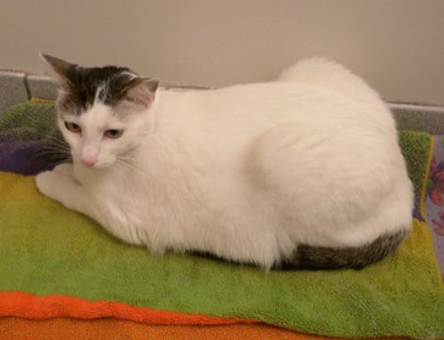
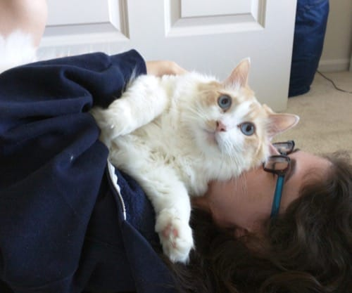

This is the story of our two cats, Prince (left, black & white) and Bear (right, orange & white, large). They were shipped to us from the deserts of Arizona. (In carriers, with the owners, not in boxes as pictured.)
They spent their first few days hiding in our bathroom, scared to come out. Despite usage of the room becoming very awkward for us, we tried to make their brief stay as comfortable as possible (with a comfy towel).
Within a week or two, though, they got used to our apartment and started lazing around as if they owned the place.
They started to become a little too comfortable and trusting.
Prince and Bear even started acting affectionate, as if they liked us.
However, they weren't always so happy when we returned that affection.
Supposedly, the two are brothers, despite having very different appearances (and weights!). They got along splendidly, eating together, playing together, and sleeping together (the three main feline activities).
The two put up with our stupid shenanigans and puns for some reason.

And were quite perplexed when we tried to get them to drink more water.
As it turns out, they're not the biggest fans of drinking from fountains. I'm surprised they're not thirsty after all the yoga they practice.

Also, It turns out that white cats are not ideal if you wear dark clothing.
Occasionally, we had to leave them to go travel. Despite their wishes, apparently. Bear wanted to come with us.
And Prince would wait dutifully by the door for us to return.
Like most cats, they seemed to enjoy boxes.
And their cat tree perches.
They also seemed to enjoy sitting on our clothes and shoes.
Or even taking the place of our clothes.
And showing off their own coat.
Which, by the way, requires a lot of work to keep clean. Luckily, Prince helps out.
Sometimes they drink a bit too much.
And end up too drunk to sit up anymore.
After swearing off drinking, Bear decided to start a veggie cleanse.
But, even after all of their silliness—Bear and Prince have turned out to be an awesome pair of cats.
Copyright © 2016 Julian Lunger